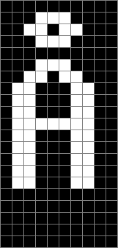
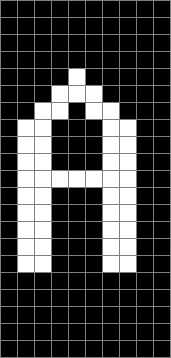
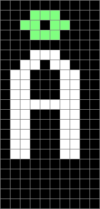
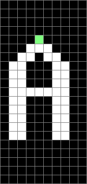

Hausdorff distance is the distance from the furthest point on one island (or coast) to the nearest point on the other island, or vice versa. So it is the maximum distance you must travel if placed in any position on one island and ask to get to the other. The half Hausdorff distance is the same measure, but with the restriction that you must be on island A and hoping to trave to isalnd B, or vice versa. Hausdorff distance is simply the maximum of the two half Hausdorff distances.
If we relax the requirement for two physical islands and allow them to overlap in space, Hausdorff distance becomes quite a good measure of similarity. Two identical shapes will have a Hausdorff distance of zero. However all the weight is onthe outlier, on the most distant point contributes to Hausdorff distance.
 Here are two binary images, a Latin A and a Nordic A-ring. The images are substantially similar, except for the small decoraton on top.
To calculate the Hausdorff distance discretely, we repeatedly dilate the image with a 3x3 all set structuring element, until all pixels in the other image (original) are covered. The number of dilations gives us the half-Hausdorff distance. We then repeat the process with the other image to obtain the other half-Hausdorff distance. This method weights diagonal and straight moves equally.
 Pixels not in the other set are green. The half-Hausdorff distance A to B is three, B to A is one. So A is very nearly a superset of B, just one pixel on the border in B but not in A. However the half-Hausdorff distance of 3 for such a small image doesn't tell you much about what type of superset A is. In fact the images are nearly identical apart from the ring, but almost any image that would fit on the grid would have a half-Hausdorff distance of three or four. Use the function in reality for relatively large, compact shapes.
Code